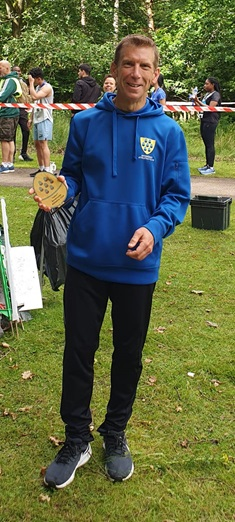
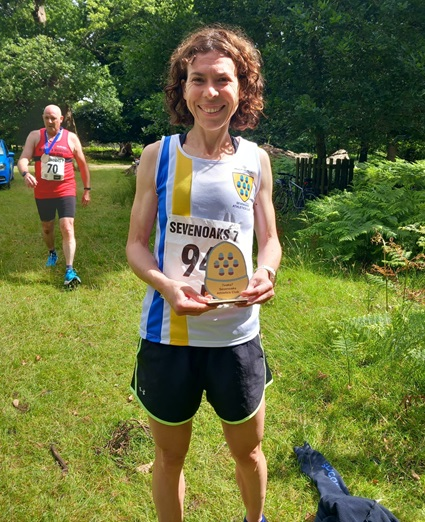
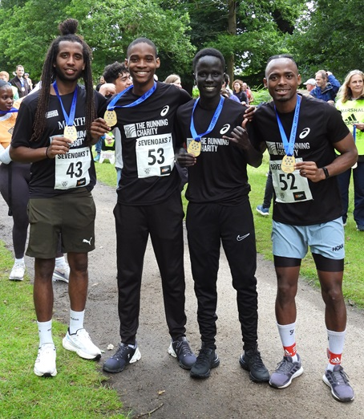
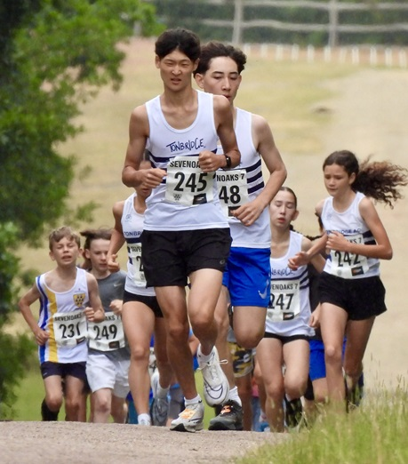
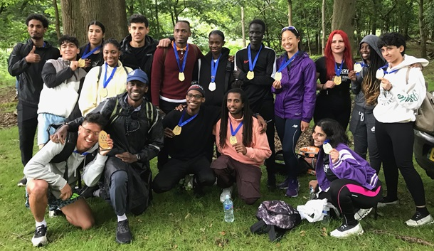

The 29th Sevenoaks 7, organised by Sevenoaks Athletics Club, took place in Knole Park on Sunday July 7th, writes Jim Knight. Over 150 runners from all around the Southern Counties tackled the challenging 7-mile course and twenty 9 – 15-year-olds took part in the 2-mile junior race.
The runners registered in Sevenoaks Rugby club before walking over a mile to the start at the bottom of Broad Walk. From there, the single-lap course, agreed with Knole Estates, wound its way through the park and involved ascents of Broad Walk, Chestnut Walk, and the infamous Gallops, making it a really tough challenge.
The leading runners made light work of the hills, finishing in just over 40 minutes but some of the slower runners took an hour longer.
Conditions on the day were good for running, with a cool breeze and fortunately the forecast thunderstorms stayed away until after the race. However, the weather was not so kind to the marshals responsible for taking down the course markers after the race.
{kind=link}
{kind=link}
The winner was Tsegay Berhane from The Running Charity in a time of 40.15, followed by Mori Alimi also from The Running Charity in 40.43, and Alexander Donnelly from Maidstone & Medway AC in 41.19.

The fastest Sevenoaks AC runner was Steven Hough who was 6th in 43.11.

The fastest woman was Sevenoaks AC’s Nicolene Hanekom who had a brilliant run to finish in 11th place overall in 44.54.
The previous Race Director, Richie Thomas finished in 1hr 20.

The team trophy was won by The Running Charity,

In the junior race, the top 4 runners all represented Tonbridge AC. The winner was Kaito Patterson in an impressive time of 12.39, followed by Arianne Launders in 13. 31, Yugo Maeda in 13.52, and Hana Maeda also in 13.52.
Race Director, John Stevens, said; “This is a big undertaking for Sevenoaks AC, involving a team of 40 marshals, officials and helpers. A big thank you to all the course setters, marshals, event centre officials and everyone who gave up their time to help.

“I was delighted to see such a big team from The Running Charity – a charity that Sevenoaks AC has supported for a number of years. It is a great charity that nurtures young people who are experiencing or at risk of homelessness and helps them reach their full potential. They do it through running and personal development programmes within a supportive community. The team who came and took on the challenging Sevenoaks 7 were full of energy and enthusiasm. It was a great pleasure to host them at the race.”
The full results for the senior race are here, and for the junior race here. The Running Charity website is here.